Website Audit Report
Here's the audit report our agency and others use to close hundreds of deals. This audit report is perfect for delivering value, building trust, and establishing your expertise..
We spent countless hours perfecting this audit report and figuring out what consistently works... So you don't have to!
Stand out from the competition and start generating more revenue for your business today. Easily brand and personalize our audit report for your business today for free.
Reports Available In:
 
Preview Report

Preview Report
Related Audit Reports

On Page SEO Audit Report
Generate dozens of actionable on page SEO insights in minutes.

Landing Page Audit Report
This landing page audit report is perfect for helping your prospects and clients increase their conversion rates, reduce their lead/customer acquisition cost and improve their ROI.

Digital Competitive Intelligence Analysis
Audit Report
Use this audit report strategically to deliver value and build trust with your prospects and clients. It offers insights they can use to out-maneuver their competition.

E-commerce Website
Audit Report
Conducting an audit of your prospect or client's e-commerce website does not have to be complex or time-consuming.

ROI Audit Report
Use this audit report to help answer the most important question your prospect or client asks before hiring you.

ROI Ecommerce
Audit Report
Use this audit report to help answer the most important question your prospect or client asks before hiring you.

Page Speed Insights
Audit Report
Identify issues and get recommendations to help pages load faster.

Page Speed Lead Magnet Audit Report
Identify issues and get recommendations to help pages load faster.

Website Lead Magnets for Web and SEO Agencies
This landing page audit report is perfect for helping your prospects and clients increase their conversion rates, reduce their lead/customer acquisition cost and improve their ROI.